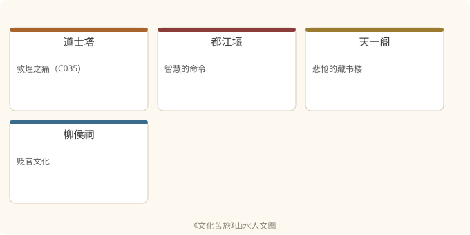

文化苦旅
一、基本信息
| 作者 | 余秋雨 |
|---|---|
| 成书/出版 | 1992年3月进入读者视线（中国作家网 C035）；'累计已印行千万册以上'（C035） 论《文化苦旅》的艺术魅力（中国作家网，吴欢章）（官方文学机构） |
| 国别/地区 | 中国 |
| 时代 | 现当代 · 当代 |
| 体裁 | 文化散文集 |
| 语言 | 汉语（白话） |

《文化苦旅》山水人文图（主题·结构图）
二、创作背景
中国作家网（C035）：'从1992年3月进入广大读者的视线，立刻引发了阅读的热潮'，'至今累计已印行千万册以上'，是'中国现代散文出版史上的奇迹'。
精神内核（C035）：'呼唤文化良知的回归，构建健全人格'。
三、内容脉络
《道士塔》：由王园箓墓塔写起，'将笔触伸向一个重大的历史溃疡'——敦煌文物流失之痛（C035）。
《都江堰》：对比句'秦始皇筑长城的指令，雄壮、蛮吓、残忍；他筑堰的命令，智慧、仁慈、透明'（C035）。
《风雨天一阁》：家族护书是'极端艰难、又极端悲怆的文化奇迹'（C035）；《柳侯祠》：'贬官文化'（C035）。
四、主要人物表
| 人物 | 身份 | 说明 |
|---|---|---|
| 行走的学者 | 叙述者 | 人文山水的考察者 |
五、主题与艺术特点
- 文化良知的回归（C035）。
- '人文山水'的时间化（C035：结构三类型——开放式/立体型/聚焦型）。
- 健全的文化人格与历史使命感（C035）。
六、影响与评论
- 中国作家网：印行千万册以上——'中国现代散文出版史上的奇迹'（C035）。
论《文化苦旅》的艺术魅力（中国作家网，吴欢章）（官方文学机构） - 中国作家网：语言'新颖而又平易、精准而又深刻、机智而又隽永'（C035）。
论《文化苦旅》的艺术魅力（中国作家网，吴欢章）（官方文学机构）
七、阅读建议
难点
- 文化散文的抒情尺度。
- 历史细节的可靠度（学界讨论）。
- 《文化苦旅》（东方出版中心/长江文艺出版社版本，通说待核）。
先《道士塔》《都江堰》→《风雨天一阁》。
八、待核实
- 初版（上海知识出版社1992年3月说）核对。
- 《文化苦旅》新版（2014年增补说）待核。
- 余秋雨生年与职务核对。
本页主要来源
余秋雨的其他收录作品：文化苦旅